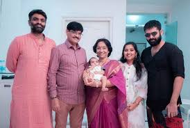
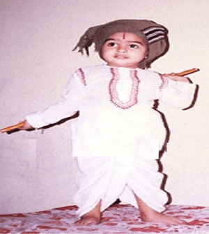
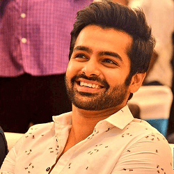
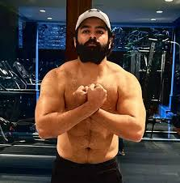

Ram Pothineni

Ram is son of the well-renowned film producer Ravi Kishore Pothineni nephew Murali Mohan Pothineni, popularly regarded as Sravanthi Ravi Kishore. He finished his schooling at Chettinad.Ram Pothineni brought into the world 15th May 1988 and is a Telugu film industry Indian actor. He was born in Telangana, Hyderabad.
family
Father Name: Murali Mohan Pothineni Mother Name: Padmasree Sister Name: Madhu Smitha Pothineni Wife Name: Unmarried Brother Name- Krishna Chaitanya Pothineni
Personal Images
  Disclaimer
This figures are used by me.
Signature